← 返回阅读库 · 原论文目录
论文讲解阅读文档 · 表征学习 · v156
DINO Emerging Properties in SelfSupervised Vision Transformers[2104.14294]
视频时长 00:09:55；讲解文字 5,255 字符；提取讲解画面 23 张。按视频原顺序阅读，每段文字保留时间戳。
文字来自整段视频的自动语音转写，按自然停顿分段，并与 PPT / 论文页面 / 演示画面对齐。未将讲解压缩为摘要；术语、数字和口述公式请结合画面及原论文核对。 阅读稿已校正规范部分明确术语误识别；原始逐字稿和每处修改记录另行保留。
讲解画面为源视频截图（640×360），不是可编辑 PPT 文件。全片按每秒 2 帧扫描内容变化，逐步展开页保留；连续动画保留代表画面。清晰度受源视频限制。
下载完整资料包 · 含离线 HTML、PDF、Word、全部 PPT 画面和字幕。
原论文与材料
Emerging Properties in Self-Supervised Vision Transformers · 下载完整 PDF（21 页）
按时间阅读
00:00:00–00:00:23 · 画面 001
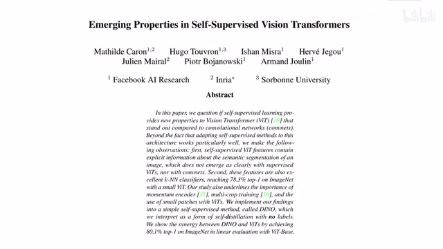
00:00:00–00:00:23 · 画面 001大家好,今天我们来迅速说一篇论文 Emerging Properties in Self-Supervised Vision Transformers 那么还是我们因为之前已经介绍过了各种 Self-Supervised Learning 的方法这里我默认你已经熟悉了经典的像 SwAV,SimCLR,BYOL 这种方法所以这篇论文我们会很快速的介绍好的,我们直接开始来到本文的架构我们关注 Self-Supervised Learning
00:00:23–00:02:17 · 画面 002
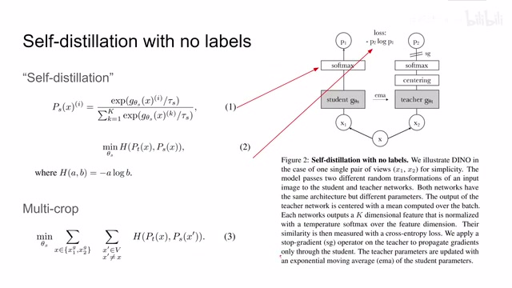
00:00:23–00:02:17 · 画面 002那最经典的套路呢就是一幅图像两种增强送到两个网络里面然后呢算一个 contrastive loss 那么这里呢与之前的工作有所区分的是这里呢做了对每一幅图像提出了一些 feature 之后呢对这个图像的 feature 呢做了 softmax 这个 softmax 之后的 distribution 呢作为这个样本在空间中它的一个 feature 那么两边的 feature 呢我们也没有做 contrastive loss 而是直接使用了这个 cross entropy那么这个呢，是有别于之前的设计。那么根据体的来看，我们这里的两路呢，两个网络，一个叫做 student network，一个叫做 teacher network。其实他们并不是真正的 student 和 teacher，它的本质呢，实际上还是 momentum encoder。就是左边这个网络是在线更新的，右边这个网络的参数呢，是左边这个网络的参数加权原来的网络的参数来得到的更新。那么因为本文探讨的是 vision transformer 嘛。
所以这些网络都是 Vision Transformer，你用 VIT 用 DEIT 这些结构都可以。作者也尝试了这两种结构。那么再往下看，我们的 Transformer 它有 classification token，这个 token 出来的 feature 作为我们再往下的 feature，送到一个 projection head 里面。这个 projection head 是一个三层的 MLP，这个 MLP 输出的就是我们投到 latent space 里面的 feature。
对于这个 student network 来说呢，这个 feature 呢，就是这一下你对它呢，除了上这个 temperature，这个 temperature 呢，用来控制我们的整个 distribution 的分布对吧，然后呢过这个 softmax 就可以了。而对于这个 teacher network 呢，在你做这个 softmax 之前呢，我们还需要做一个 centering。这个 centering 呢，就是在 teacher network 它的输出呢，减去一个值，这个值呢，是过去 teacher network 输出的平均值。
00:02:17–00:02:23 · 画面 003
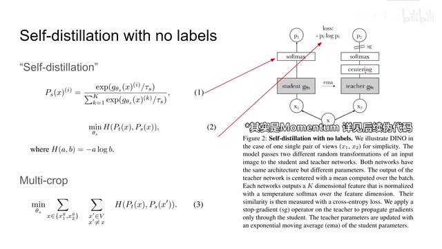
00:02:17–00:02:23 · 画面 003那么通过这样一个操作呢，作者认为可以使模型就是 teacher network 的输出呢，更加的平滑。那么别忘了后面跟 student network 一样的，我们这里还有 softmaxsoftmax 里面呢，我们还要出一个 temperature。这样子呢，softmax 呢，会把我们 teacher network 它的 distribution 呢，大小对比呢，变得很剧烈。
00:02:23–00:02:28 · 画面 004
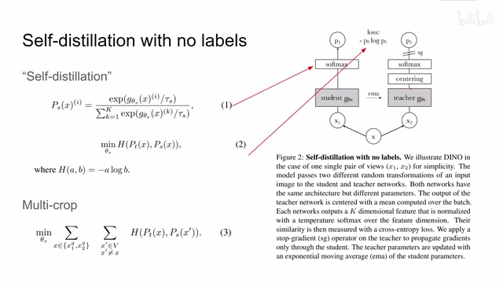
00:02:23–00:02:28 · 画面 00400:02:28–00:02:29 · 画面 005
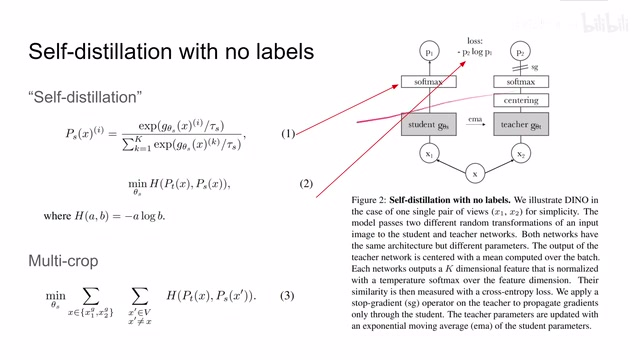
00:02:28–00:02:29 · 画面 00500:02:29–00:03:50 · 画面 006
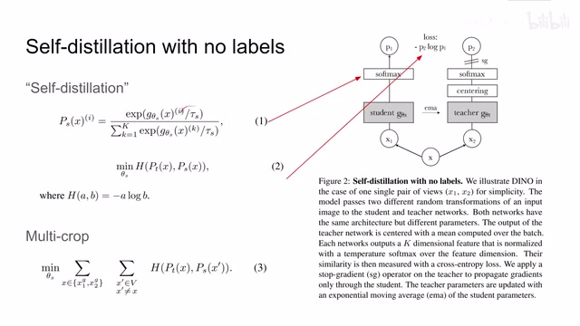
00:02:29–00:03:50 · 画面 006这样子呢，是一个锐化这么一个 distribution 的过程。那么 centering 呢，平滑了这个 distributionsoftmax 呢，锐化了这个 distribution。在这两种运算对抗的过程中呢，作者认为说我们就可以避免模型的坍塌，就是避免所有的图像都收缩到一个点。那么随后呢，也是很常规的把这个 Gradient 来停掉对吧，然后我们得到 Latent Representation。两个 Latent Representation 呢，做 Cross Entropy 就可以了。
那么这里呢，作者选择的是这个 cross entropy 加 softmax 的组合，就可以把这个 representation 呢，理解成是一个概率的分布 distribution。假如我们这个 distribution 它的长度是 k，那么就相当于我们在这个 latent space 在一个虚空之中，我们有 k 个聚类的中心或者叫 k 个维度。那么你通过衡量每一个样本在这 k 个维度中相互的距离，你就可以来描述两个样本的相似程度。
那么你可以意识到这跟聚类的方法跟一些 kernel methods 他的核心的思想是一致的。哎，为什么这么巧合呢？因为本文的第一作者呢，就是这个 swav 他的第一作者，你看他论文呢，就是各种聚类的方法一脉相承的这么做下来的。那么好了，我们刚刚介绍完了这个算法的大义呢，我们直接来看这个算法的伪代码。
00:03:50–00:03:51 · 画面 007
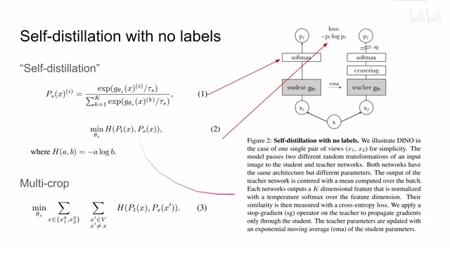
00:03:50–00:03:51 · 画面 00700:03:51–00:03:53 · 画面 008
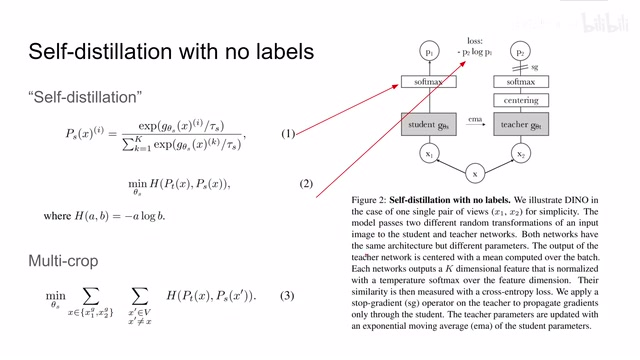
00:03:51–00:03:53 · 画面 00800:03:53–00:03:59 · 画面 009
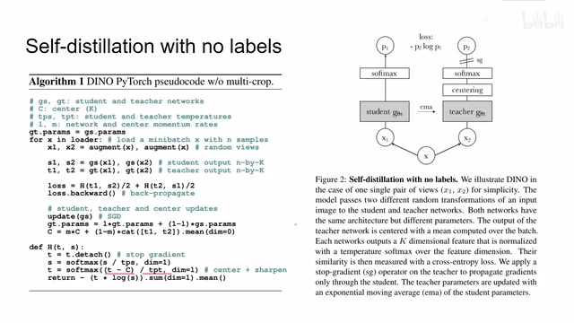
00:03:53–00:03:59 · 画面 009那么这里呢，你首先看到我们的这个 teacher network 和 student network，一开始呢，我们也是把它初始化成一样的网络，所以呢，他们根本就不是 student 的 teacher。那么随后呢，我们开始训练，修了一张图像之后呢，经过两种不同的图像增强，这图像增强呢，包含这个 multicrop，也就是两幅全尺寸的图像加上很多幅图像局部的画面。
00:03:59–00:04:00 · 画面 010
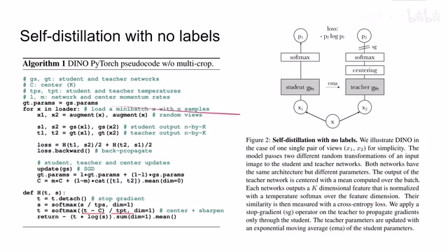
00:03:59–00:04:00 · 画面 01000:04:00–00:04:24 · 画面 011
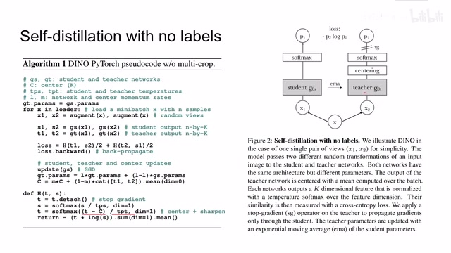
00:04:00–00:04:24 · 画面 011那么这个技术呢，我们在之前的 SwAV 里面也详细的介绍过了。那么得到增强后，两幅图像 s1s2 呢，送到我们的 student network 里面和 teacher network 里面，然后呢，我们算他们相应的这个 cross entropy 这个 loss 就可以了。那么更新完了之后呢，记得使用 momentum 的方法把 student network 的参数呢，更新到这个 teacher network 里面，然后呢，记得再更新一下我们这个 center，也还是以 momentum 的方法。
00:04:24–00:04:25 · 画面 012
00:04:24–00:04:25 · 画面 01200:04:25–00:04:38 · 画面 013
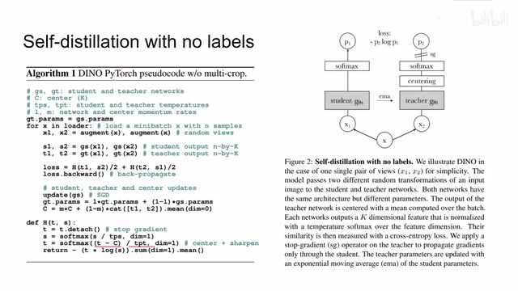
00:04:25–00:04:38 · 画面 01300:04:38–00:04:39 · 画面 014
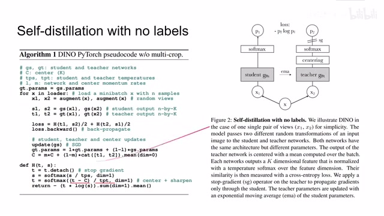
00:04:38–00:04:39 · 画面 01400:04:39–00:05:01 · 画面 015
00:04:39–00:05:01 · 画面 015把我们 teacher network 的输出来平滑到我们当前的这个 center 当中。那么这里呢，计算 cross entropy 的过程呢，略有不同，就是因为我们在 softmax 之前呢，用了这个 temperature 来对这个来控制我们网络输出的 distribution 它的分布。那么而对于这个 teacher network 呢，我们不仅要做 temperature。
00:05:01–00:05:02 · 画面 016
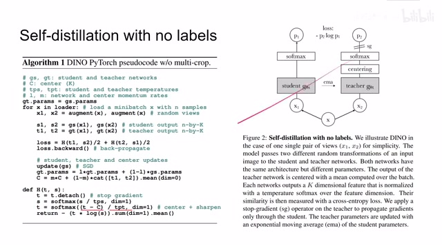
00:05:01–00:05:02 · 画面 016而且呢，要做这个 centering，你可以看到直接就是把我们的这个 center 呢，减去了就可以了。然后呢，再做这个 temperature，这样部分呢，就是我们之前提到的 smooth 和 sharpen 他们两个的对抗。那么最后呢，算这个 cross entropy 就可以了。
00:05:02–00:05:17 · 画面 017
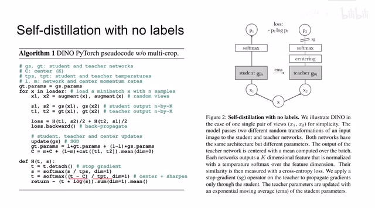
00:05:02–00:05:17 · 画面 017那么此外呢，还有一个细节，就是我们的 projection head，我们的 transformer encoder 它的 classification token 拿出来的 feature 之后呢，我们要送一个 projection head 里面，然后呢，再做 softmax。这个 projection head 呢，是一个三层 mlp，它中间呢，有一个 L2 normalization，而且呢，前面的这个 mlp 它的尺度呢，是比它的输入的尺度要小的，这样子呢，形成一个小的 bottleneck。最后呢，再从这个 bottleneck 输出到原来的这个尺寸。
00:05:17–00:05:57 · 画面 018
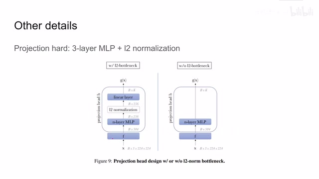
00:05:17–00:05:57 · 画面 018那为什么这么设计呢？只能说作者试出来了。它效果好那么这一点细节呢，是我们当时在介绍 SWAV 的时候呢，没有介绍了一部分，这里呢就补充一下。好的，那么我们就最后看到作者汇报的结果吧。
00:05:57–00:06:43 · 画面 019
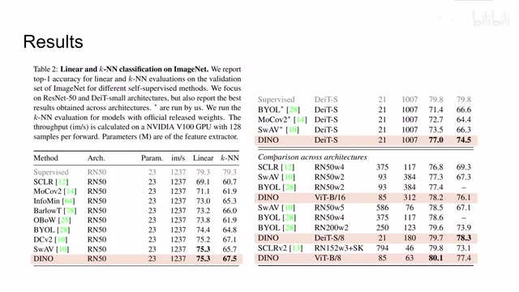
00:05:57–00:06:43 · 画面 019那么首先呢是经典的 ImageNet，对吧，我们拿到了这个最终的 feature 之后呢，做 linear classification 或者 KNN classification得到结果那你可以看到这些都是我们老熟人了。本文的方法呢，即便是使用相同的 backbone，也 outperform 之前这些方法我只能说不愧是一个作者做出来的，这个 linear classification 的结果都非常相近。
然后换上我们的 Vision Transformer比如说这里是 Distillation Image Transformer它 outperform 之前这些方法同时很接近了我们 supervised 的方法。那么这边换到 Vision Transformer你可以看到本文方法一样 outperform 之前这些方法。
那么其他的作者还汇报了一些实验，我们就不再一一列举了。总之肯定是一些美好的数字。
00:06:43–00:07:53 · 画面 020
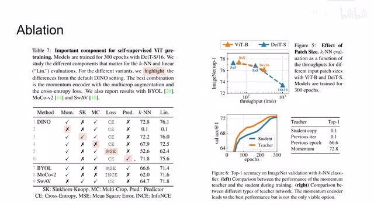
00:06:43–00:07:53 · 画面 020那么本文的重点其实我们想要关注，做着做的 ablation比如说这里做着测试的，像 momentum encoder Sinkhorn distance这个是在 SWAV 里面介绍的。然后像 multicrop也是 SWAV 里面介绍的那么还有最终使用的 loss，为什么我们使用 cross entropy而不是使用 MSE还有这个 prediction head 就是 student network 加 projection head 之后呢，再加一个 prediction，那么你可以看到呢，还是这种设计呢，它的效果最好。那么此外呢，作者还研究了这个 patch size，也就是我们 vision transformer 一个 patch 画多大，同时呢，研究了一下我们应该如何更新这个 teacher network，你可以看到呢，当我们立刻把 student network 它里面的参数刷到 teacher network 里面的时候呢，这样的配置呢，效果是不好的。
只有我们间隔过一段时间之后，或者说使用 Momentum 的方法之后，我们整体网络的性能才能上来。而且这里有一个非常有意思的现象，就是我们的 Teacher Network 自始至终是 outperform Student Network，也就是说我们使用 Momentum 更新的 Encoder，它实际的表现比我们在线更新的网络要好。这个是非常有意思的观察，在之前的论文中是没有出现过的。
此外呢，作者还做了一些关于 collapse 的研究，那就是我们说的那个 temperature 来控制我们的 distribution 变得更加锋利，和这个 centering 让我们的这个 distribution 变得更加的平滑。通过这个 entropy ，你可以看到这两个项目它对我们的 teacher network 输出的这个 performance 的影响。这两个加起来之后呢，我们得到的 entropy 是这样的。这边这个图呢，显示了我们的 teacher network 和 student network 它的 KL divergence。
00:07:53–00:09:05 · 画面 021
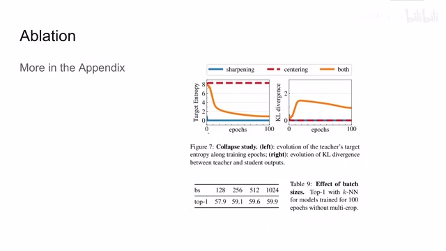
00:07:53–00:09:05 · 画面 021我们发现呢，如果单纯只是使用这两种方法中的一个来约束我们的 teacher network 呢，我们的两个网络呢，很快就坍塌到一起了。你看了 student network 和 teacher network 他们俩的 KL divergence 呢就是 0 了，他们输出的接近有一模一样。这显然是我们不希望看到的。那么把这两者都加上之后呢，我们得到了一个这样的 KL divergence 的曲线。那么这里呢，作者还试了不同的 batch size，毕竟如果你做 contrast learning 的话，对 batch size 是敏感的。那么本文技术的方法因为没有做那些东西，所以呢就不那么敏感。那么在本文的附录中呢，有大量的关于网络结构的设计啊，包括 normalization 啊，centering 的速度啊，等等等等，这些具体设计的这些实验。这里非常推荐你到论文原文中查看。
那么最后呢是做了一次了一些 visualization 这里非常让人惊喜的是呢我们使用这些 transformer base 的方法呢在最后一层我们把这个 classification token 作为 query 拿出来之后呢发现里面的 attention map 呢就基本上跟我们想要做的这个物体的分割啊这些前景的分割啊就很接近了那么对比之下呢 supervised 的方法呢
00:09:05–00:09:55 · 画面 022
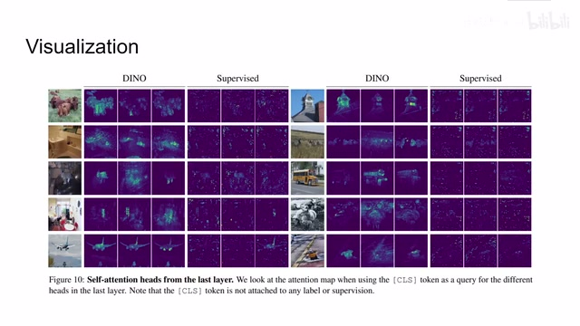
00:09:05–00:09:55 · 画面 022就不太能够显示出我们物体中间的这些 attention 的关系当然也不是说这个 self-supervised 的方法它不 work 只是说我们在最后一层 transformer 能够帮助我们非常直观的显示的就把这些 attention 的结构显示出来好的那么以上就是我对这篇论文的简单的分析这篇论文从数据上看是非常好的思路真的不复杂那么还是非常推荐你去阅读一下原文那么感谢您的收看再见
00:09:55–00:09:55 · 画面 023
00:09:55–00:09:55 · 画面 023转写与来源说明 · 1 个自动复核提示
保留 59 个原始语音片段，1 个片段触发自动复核提示。提示仅用于定位可能的术语、重复或识别问题，不等于已确认错误。
讲解画面为源视频截图（640×360），不是可编辑 PPT 文件。全片按每秒 2 帧扫描内容变化，逐步展开页保留；连续动画保留代表画面。清晰度受源视频限制。
原视频：paper/合集_2026-10-16_表征学习/[论文简析]DINO Emerging Properties in SelfSupervised Vision Transformers[2104.14294].mp4
SHA-256：a702e7ee7f9a6a6a8d06c99b7eaf29e1724f16bb30a734121222572197d1381b
做 linear classification 或者 KNN classification
全文按视频语音与画面制作。原论文可从上方链接下载；完整资料包保留全文、原始逐字稿、字幕和校对记录。